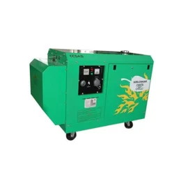

Arizona Supplies Limited Uganda is a registered Ugandan equipment and engineering trading company specializing in commercial and industrial power solutions.
The company Head Office is located at Tirupati Business Park, Plot number 587, unit number 305, Namanve Industrial Park with its operational warehouses and maintenance facilities strategically located in Namanve.
Operating from these hubs the firm serves as the exclusive authorized distibutors of Kirloskar engines and diesel generator sets across East Africa covering Uganda, DRC, Rwanda, Burundi.
"To provide better power for a limitless tommorrow by keeping business powered with durable and fuel-efficient solution"
"To deliver reliable, efficient and application specific power solutions across commercial, industrial and institution sectors"
To maintain and excute exclusive international manufacturer distributorship(specifically with Kirloskar).
To drive industrial and commercial empowerement across East Africa through reliable power infrastructure.
To strategically expand regional market share across Uganda, DRC, Rwanda,Burundi.
Kirloskar based diesel generator sets
LTIMV panels
Switch gears
Busbar trunking systems
Technical consultation
Engine load sizing
Equipment installation
After sales technical support
The organisation is managed by board of Directors including MR.ASHISH ARORA and MR.AYAAN JASANI.
